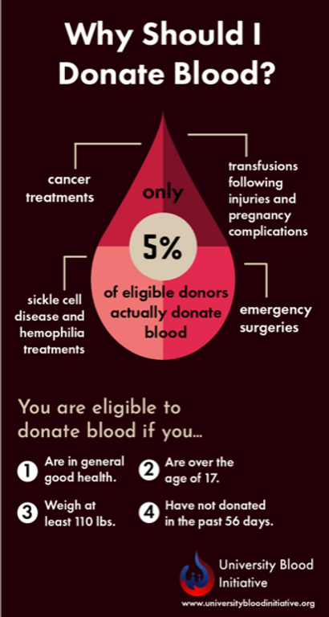

Blood donation is crucial for saving lives by providing essential blood components for surgeries, trauma, cancer
treatments, and chronic conditions like sickle cell anemia, as lab-made blood isn't available; it also offers donors
mini health checkups, potential heart/liver benefits, and a sense of purpose, making it a vital community and
personal health act.
For Recipients (Saving Lives)
1.Emergency & Trauma: Essential for accident victims and major injuries with significant blood loss.
2.Surgery & Transplants: Needed for complex operations, organ transplants, and cardiac procedures.
3.Cancer Treatment: Replaces blood cells lost during chemotherapy and radiation.
4.Chronic Diseases: Vital for patients with thalassemia, hemophilia, and anemia.
5.Childbirth: Saves mothers facing complications like postpartum hemorrhage.
For Donors (Health & Well-being)
1.Free Health Screening: Get checks on blood pressure, iron levels, and general health.
2.Heart Health: May reduce excess iron, lowering risks of heart and liver disease.
3.New Blood Cells: Stimulates the body to produce fresh red blood cells.
4.Mental Well-being: Provides immense satisfaction from helping others and saving lives.